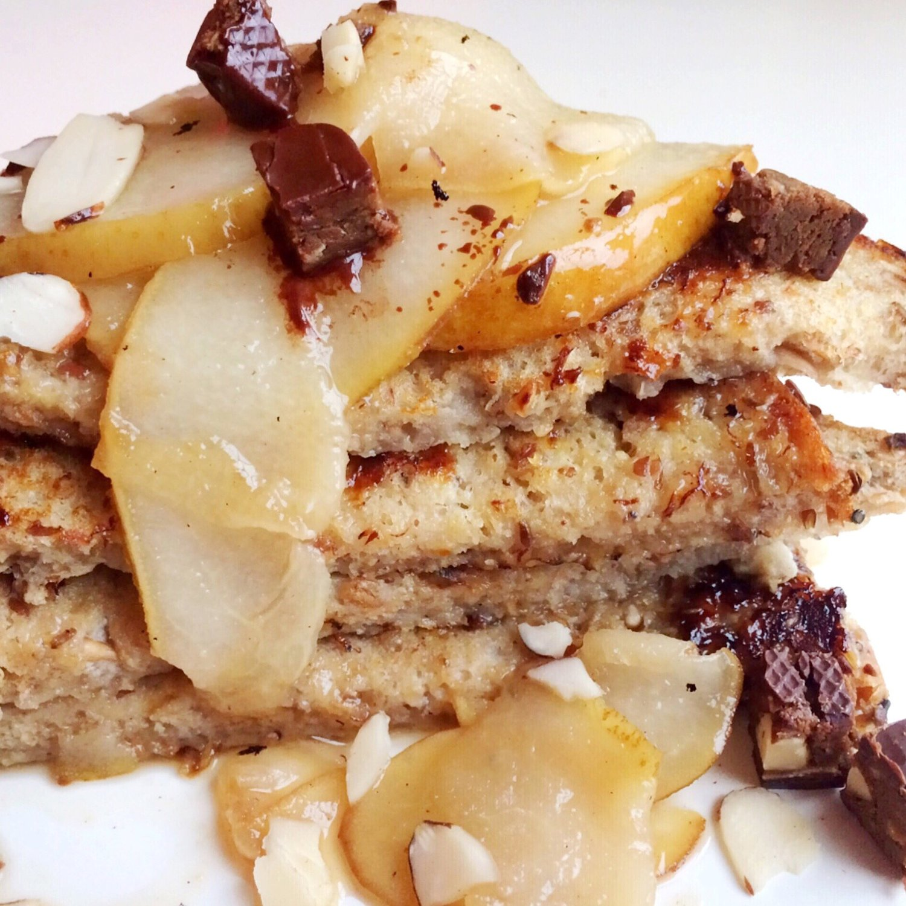
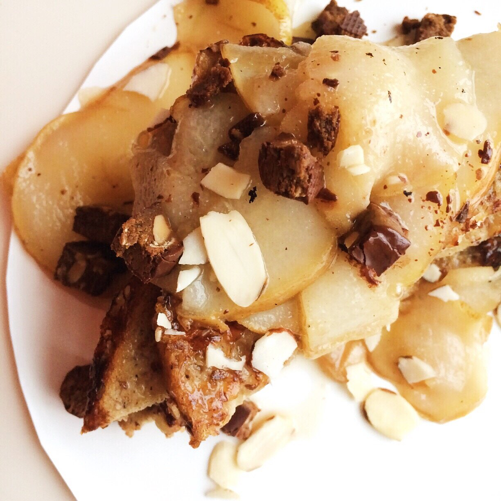

Healthy Maple Pear French Toast (Vegan, Gluten Free)

healthy maple pear french toast, vegan

Woooo it's been a busy couple of weeks. *deep exhale while I simultaneously shove my face with healthy maple pear french toast.* I was away for a while so it feels so nice to have a healthy comfort meal like this. Sweet, crisp, warm, and vegan!! It's all win win here - who says it can only be eaten for breakfast?!
I always hear people say "oh ya knowww.. holidays are just so busy" and I think I FINALLY experienced that, ha. It's kind of overwhelming. Never do this again please thanks.
But it was a nice time. My mom came to visit me in Washington; it's so comforting to see her. :) And I discovered the amazingness of Red Robin Restaurants. They have vegan patties and ENDLESS BROCCOLI BOWLS. WHAAAT. Usually large chain restaurants give the most pathetic portions of veggies, so this was like...all my prayers ever being answered. It was all so good.
You know how in the last year I've developed an extreme love of bananas. I go through 1-4 bananas daily, and if I don't have any, I go through serious withdrawals (twitching and all, probably maybe). I had just gotten a bunch of green bananas, and then accidentally left them in a 1 degree F car overnight, 2 nights in a row.... oops. They went from green to BLACK. It's so weird because they're kinda sorta still okay inside? But they look like pure death. So now I'm trying my hardest to rescue them from their iminent death asap.
Banana Emergency Rescue via french toast today. My first few attempts of vegan french toast were mehhh but I really like how it's been coming out lately. Plus this compote?!? Killer. Try out this healthy maple pear french toast and let me know what you think! Especially dat compote.
Healthy Maple Pear French Toast (Vegan, Gluten Free)
French Toast
-
2 slices bread of choice
-
1/2 ripe banana
-
1/2 TBSP ground flax seeds
-
1/3 cup unsweetened almond milk
-
1/2 tsp vanilla extract
-
1 stevia packet
Maple Pear Compote
-
1 TBSP maple syrup
-
1/2 ripe pear
-
Mash the banana in a bowl. Then add the flax seeds, almond milk, vanilla extract, and stevia. It should be liquid-y. If not, add a little bit more almond milk.
-
Soak your bread in this mixture for 2 minutes per side.
-
Spray a large pan with nonstick spray and heat to medium. Add your soaked bread; let cook for 3-4 minutes per side, until lightly brown. Remove and set to the side.
-
Thinly slice the ripe pear, then add it to the pan with maple syrup. Let cook on a low heat for 2-3 minutes, or until softened. Pour on top of your french toast.
-
Enjoy! Feel free to add toppings (I used sliced almonds and cocoa almond Square Bars)